izquierda / derecha: antes y después. + y - : zoom. Esc cierra
ALMAHUE EXPORT SPA, modo real, periodo 2026-10, ERP local, 22/10/2026. El recuadro verde y la etiqueta NUEVO están solo en la captura, no en el sistema. Un clic abre la imagen. La rueda o las teclas + y - hacen zoom. Izquierda y derecha cambian entre el antes y el después. Esc cierra.
Recorrido: recorrido.html. Manual 21/10: manual-cliente-2026-10-21. Cierre de bodega 20/10: cierres-modulos-2026-10-20.
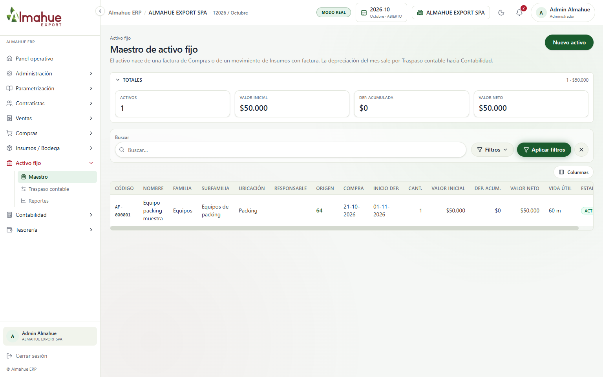
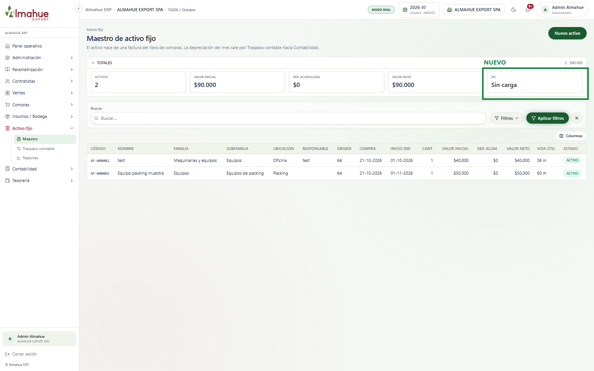
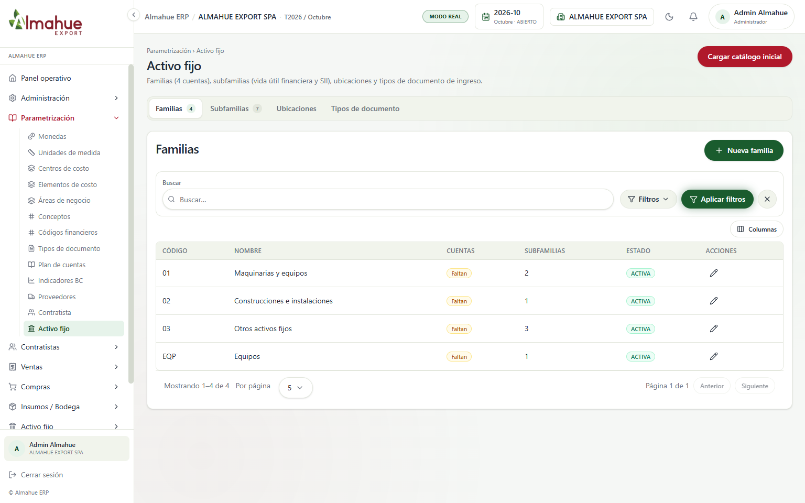
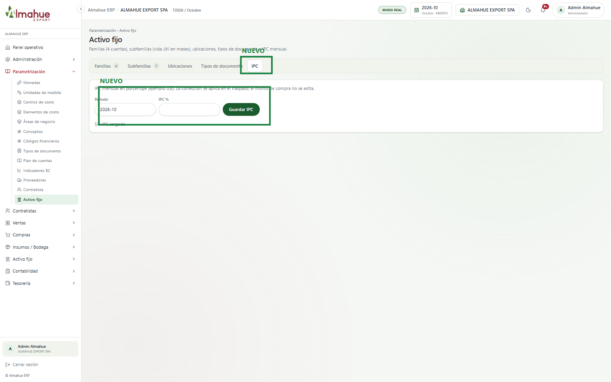
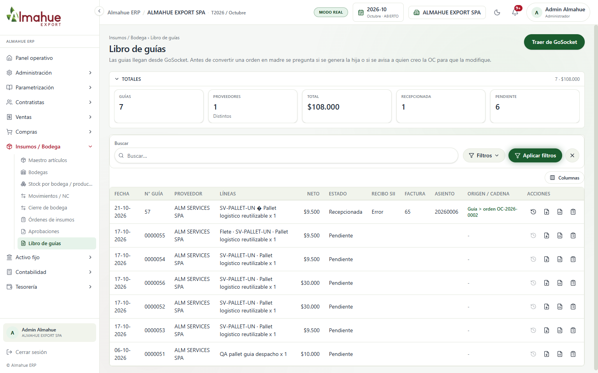
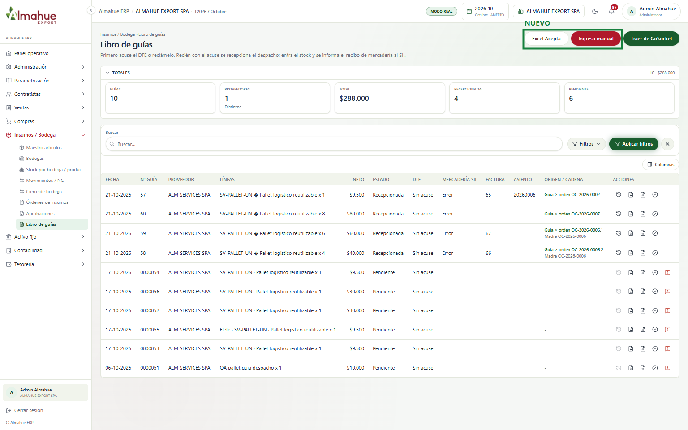
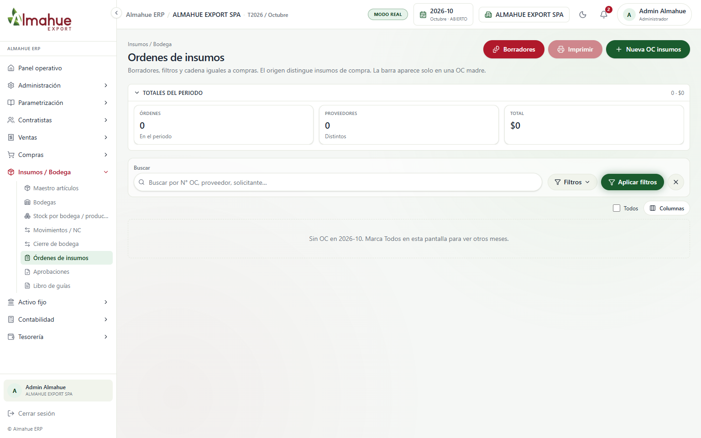
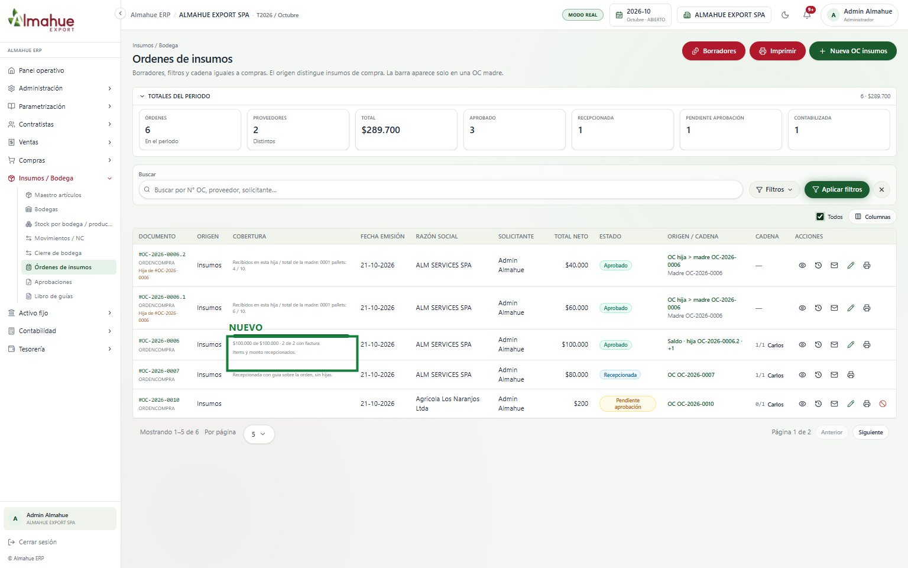
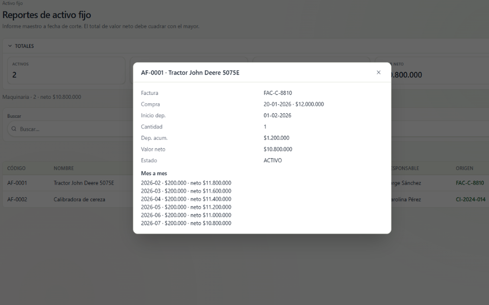
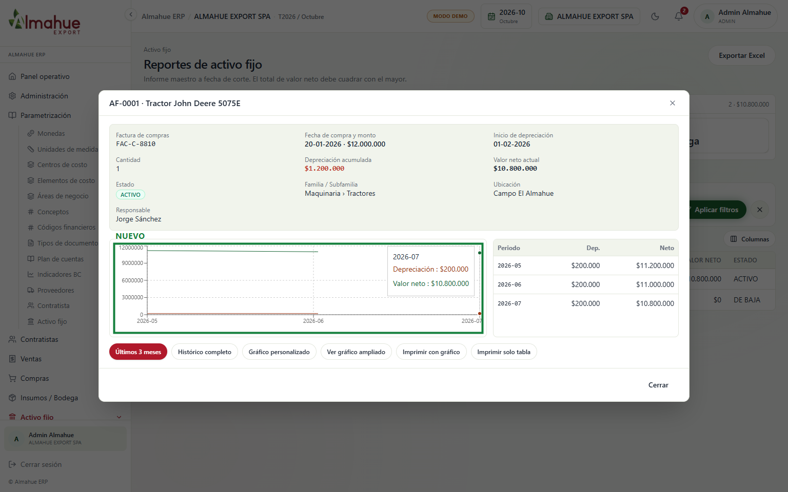
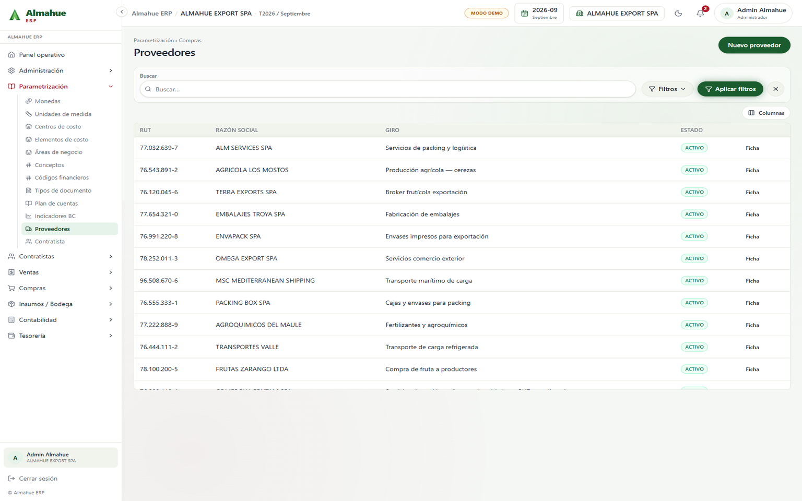
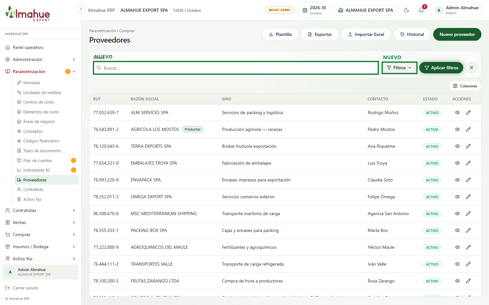
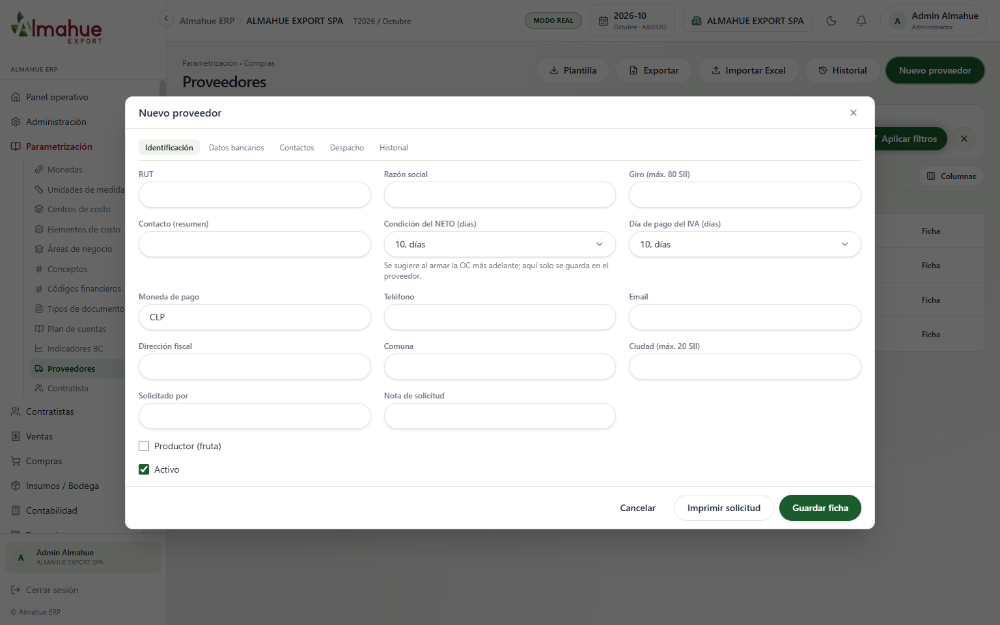
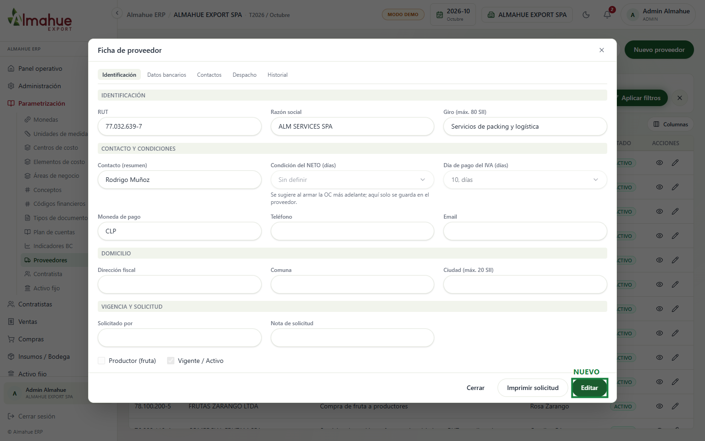
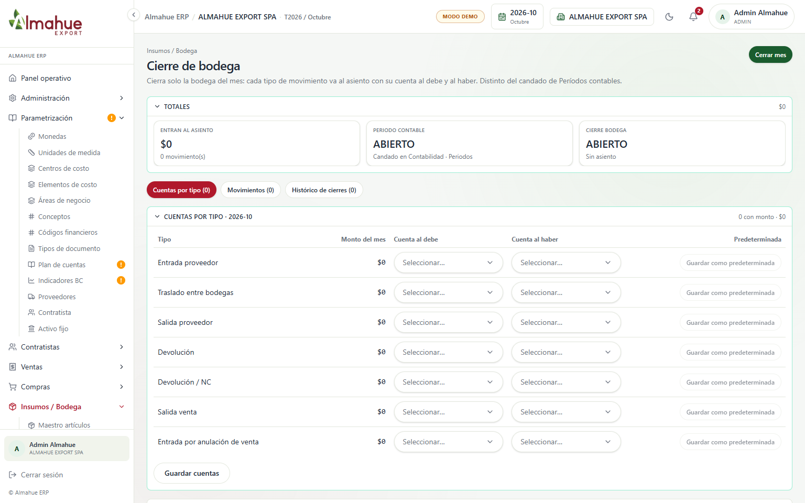
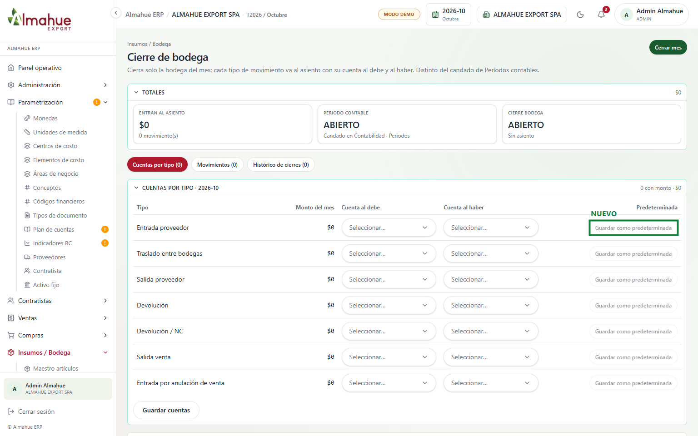